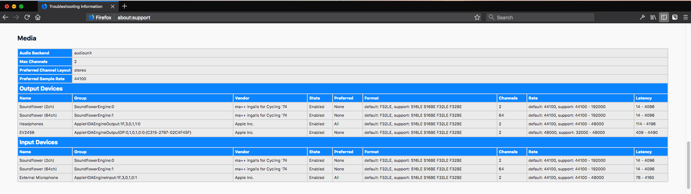
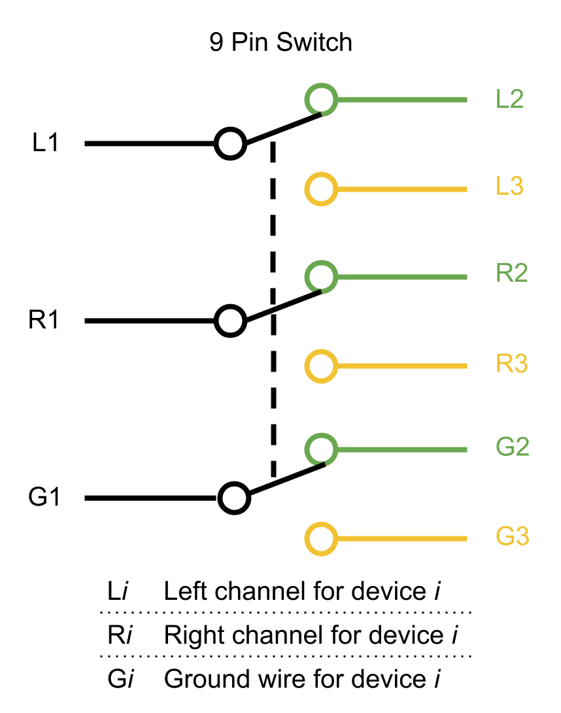

Personal Tools
I developed some tools to speed up the process for debugging malfunctions on audio. A simple table shows the audio hardware information and configuration. A device selector let me easily switch the audio sources from different platforms/computers.
Software
Firefox
Knowledge about the audio setting and its hardware information is necessary when we try to investigate the problems on audio. Unfortunately, it’s hard to know the audio configuration on the dysfunctional machine. It usually takes a few days to get this information from the reporters.
about:support
To reduce the workload on communication, I create a table shows the audio hardware information on about:support in Firefox

When reporters file bugs, they can attach these information as well so we don’t need to ask them for their settings.
Further works
There are some left works. I will try to arrange my time to finish them.
- Show driver version of the sound card
- Show unique hardware id
- Integrate this info to crash report
Hardware
Audio Device Selector
I need to frequently switch between computers with different OS to check the audio works on different platforms. It’s annoying to unconnect the speaker from one computer and then connect it to another computer again and again. Therefore, I made a device selector that can switch the audio sources of the speaker by simply flipping the controller.
The circuit is super easy. It’s nothing more than a switch. (TODO: This is wrong. Update a new one.) 
The above circuit diagram is for stereo speaker. If the speaker is 5.1 or 7.1, we need to replace the 6-pin switch to 18 pin or 24-pin switch.
In fact, the circuit is a simple track selector, so it’s not only an audio source selector for a speaker, but also a speaker switcher for a computer. That is, you can connect two speakers to a computer and select what speaker you want to play.
Future Plan
There are several ideas I believe it could ease my life as a developer:
- Virtual Audio Device
- Something like Soundflower but it’s cross-platform and provides APIs to install/uninstall devices or access the buffer data for analysis.
- Cross-platform Commands Warpper providing functions like
- Disable/Enable audio devices.
- Generate audio samples(by FFmpeg?)
Public Resources
Audio Formats
Sample files
- SONY: High-Resolution music files(AAC, FLAC)
- Hyperion Records(MP3, FLAC, M4A)
- HiRes(FLAC, including 5.1 Surround)
- Audio Check